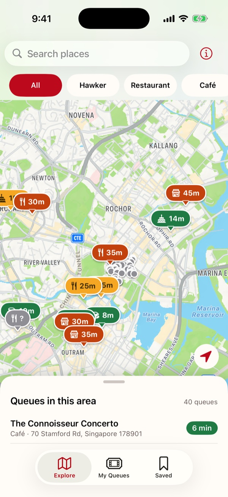
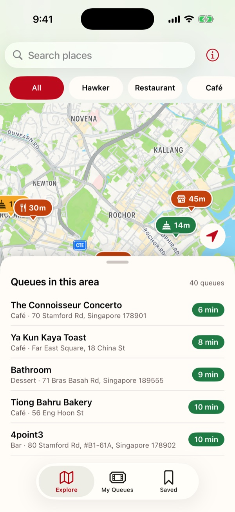
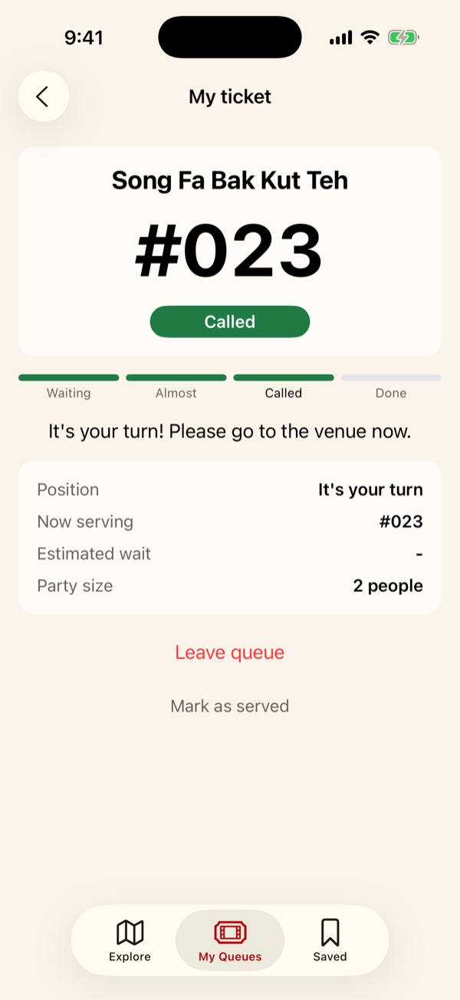

You queue first, then find out
By the time you know it's 50 minutes, you've already been standing there for 20.
Your kiasu buddy for queues
See the wait before you walk over. Join the queue from your phone. Eat when it's your turn.
For iPhone, iOS 17 and later. Made in Singapore.




Simulated waits at real places (demo data, see the note below)
The problem
By the time you know it's 50 minutes, you've already been standing there for 20.
You get the address and the opening hours. You don't get how long the line is.
Walk off to see another stall and your place is gone. That's why everyone stands guard.
Kiasu Kakis opens on queues, not places. Only food spots where a queue makes sense. No malls. No shoe shops.
How it works
Colour-coded pins show the wait in minutes. Green is quick, orange means go for a walk first.
Pick your party size and tap join. You get a virtual ticket, so you can sit, shop or scroll.
Watch the ticket move: waiting, almost, called. You walk in. No need to kiasu.


Waiting · 3 groups ahead
Feature tour
Opens on queues, not places. Colour-coded pins show the wait in minutes, and only food places appear.
Honest note: the places are real, but the queues are simulated for this demo, because there is no public Singapore queue data. The app is built so real data can slot in later.
Meet the eyes
Good morning. Save your spot.
Every time you open the app, a different food wearing the same eyes greets you. It depends on the time of day. Try it.
Move your mouse. They are watching.
For the class
Two saved places had the same ID, and the map choked on the duplicate.
Fix: remove duplicates when saving and loading, and make the map tolerate them.
Apple's text search treats the map area as a hint, so it kept returning city-centre places everywhere.
Fix: switched to an area-based request that really searches a circle around the map.
A later view covered part of it, so only the top sliver took taps.
Fix: brought it to the front, then hit-tested four points to prove it.
Secondary text was 3.15 to 1 contrast on cream. The accessibility standard needs 4.5.
Fix: a warmer, darker grey, and darker green and orange so white text reads on the pins.
A "food market" category dragged in supermarkets. Nobody queues for those.
Fix: food-only categories, plus a food-only filter on search.
Hundreds of places in the city centre, all with queues, piled on top of each other.
Fix: overlapping pins hide until you zoom, and the list shows the shortest 40.
Kiasu Kakis isn't on the App Store yet. Want to try it now? Run it yourself from the code.
kiasu kakis.xcodeproj in Xcode 26.Secrets.example.xcconfig to Secrets.xcconfig and add a Google Places API key.